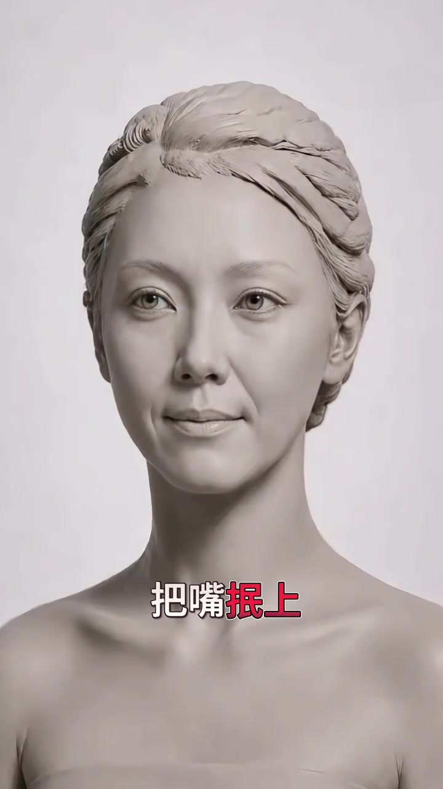
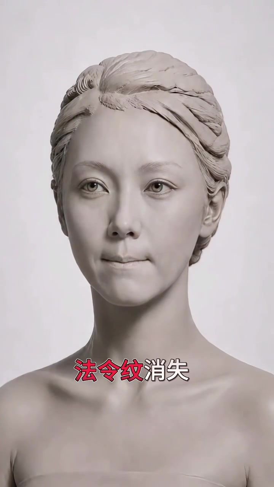
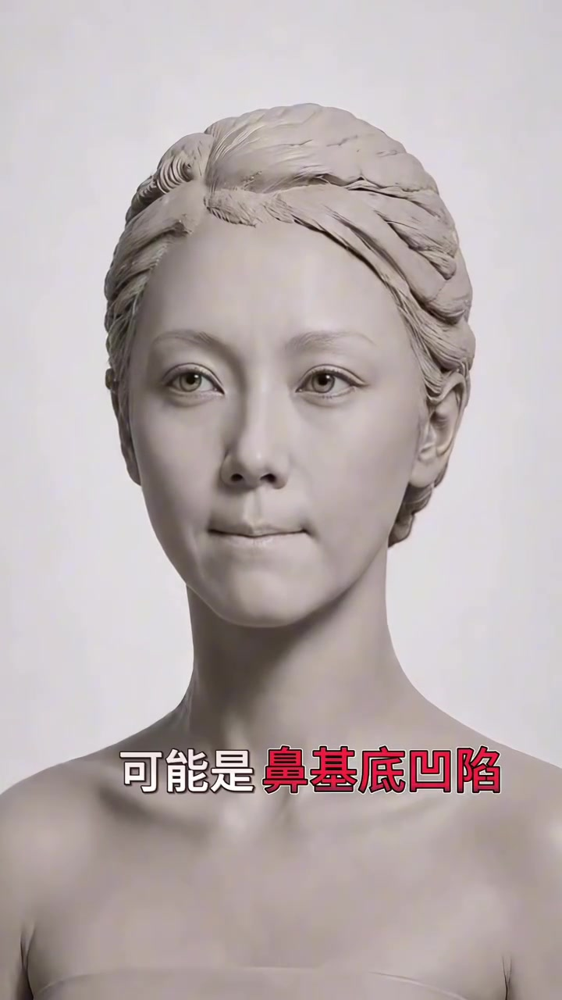
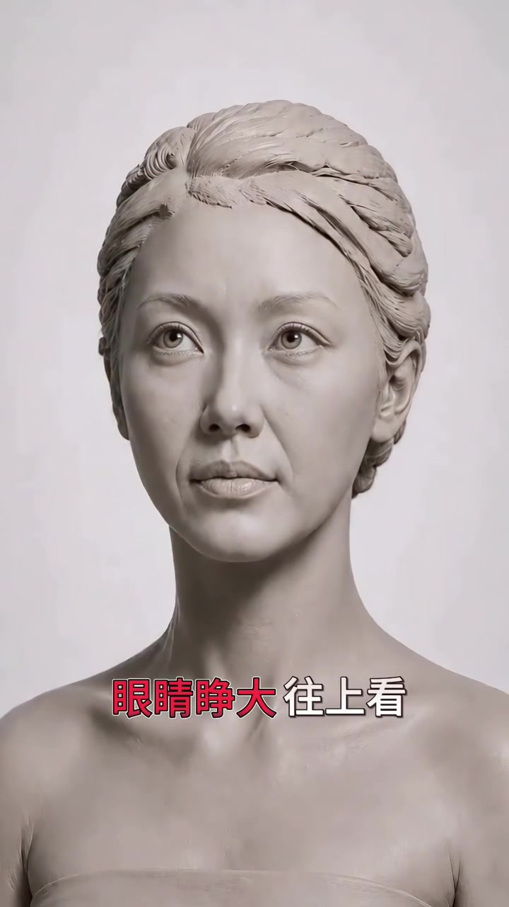
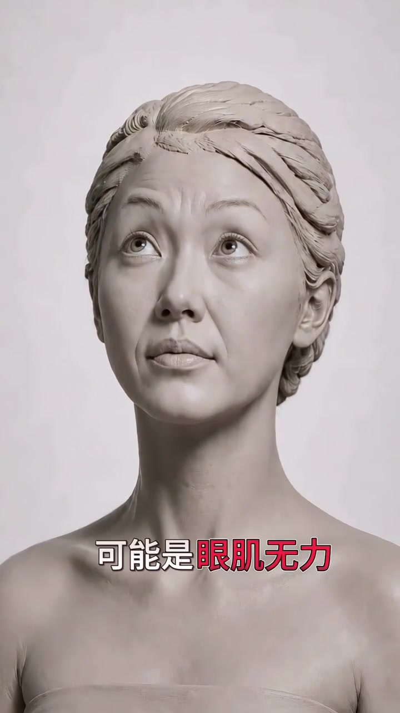
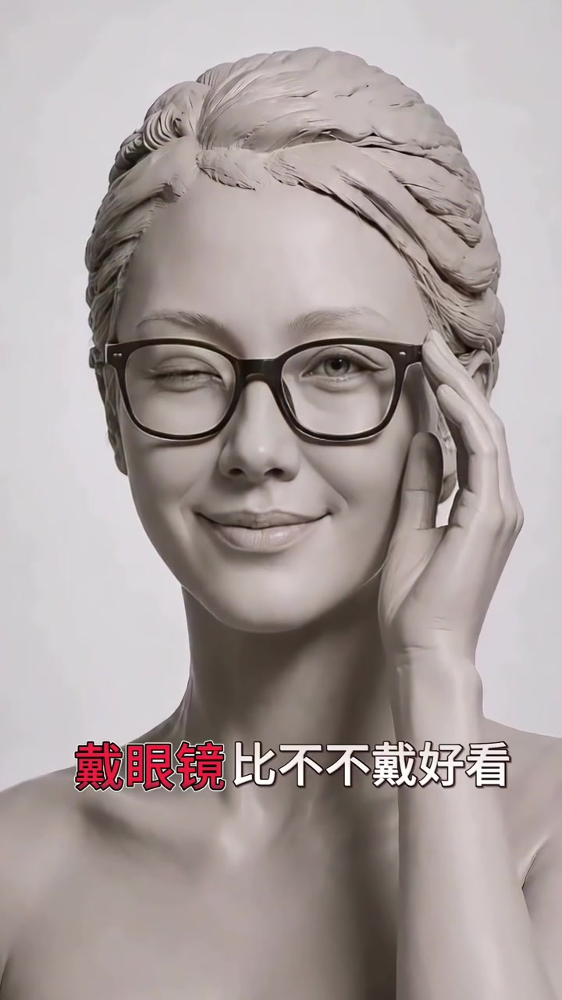
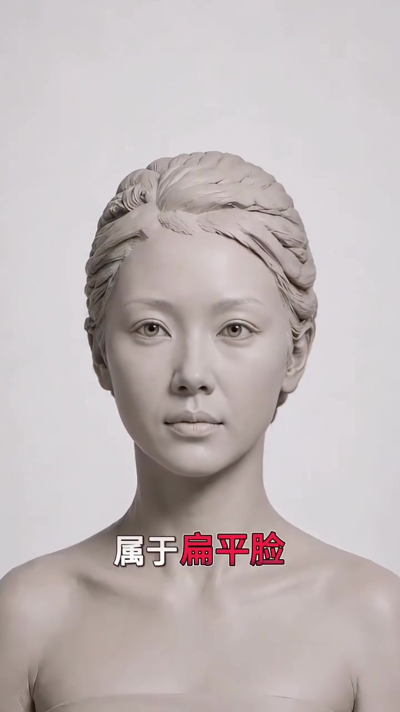
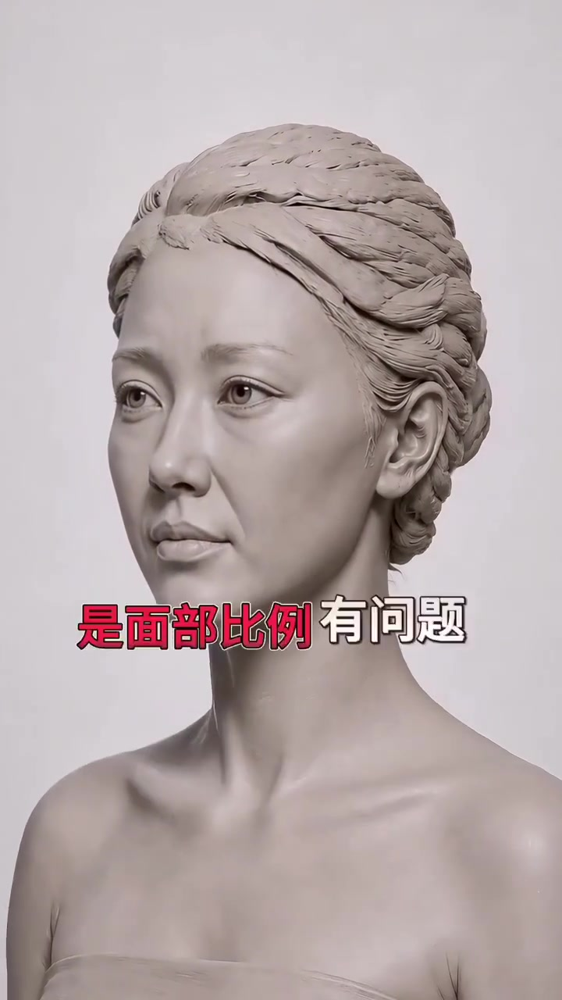

开场：用一张脸把“不好看”拆开
片子很短，几乎没有旁白铺垫。画面一开始就是一张灰调黏土风女性半身像，字幕直接丢出动作指令——先从「把嘴抿上」开始。整段视频的节奏像一张自检清单：先做动作或描述观感，再立刻给出结构层面的归因。
叙述依据可见字幕校正；文末转录区保留 Whisper 原始分段，可能含识别误差。
抿嘴后法令纹消失，指向鼻基底
第一组动作最直接：抿住嘴。紧接着字幕切到「法令纹消失」，再落到解释——「可能是鼻基底凹陷」。镜头始终盯着那张雕塑脸，让读者把「抿嘴后纹路变浅」和「鼻基底凹陷」绑在同一条因果链上。
把嘴抿上 → 法令纹消失 → 可能是鼻基底凹陷



睁大眼睛往上看，眉毛「飞」了
第二组换成眼部动作：眼睛睁大、往上看。画面里模型抬头望向画面上方，随后字幕说「眉毛看起来飞」，并给出解释「可能是眼肌无力」。这里的逻辑同样是「观感异常 → 肌肉力量不足」，而不是妆容或修图问题。
眼睛睁大往上看 → 眉毛看起来飞 → 可能是眼肌无力


戴眼镜反而更好看，说明山根塌
第三组不再做表情，而是加上一副深框眼镜。模型眨眼微笑、手指轻触镜腿，字幕写「戴眼镜比不戴好看」，立刻接上「说明山根塌」。眼镜在这里被当成补足鼻梁高度的视觉道具，而不是时尚配件。
戴眼镜比不戴好看 → 说明山根塌

近看比远好看，归到扁平脸
镜头突然推近到面部特写。字幕先写「近看比远看好看」，再给出分类：「属于扁平脸」。意思是：近距离能看清细节，远距离却缺少立体起伏，所以观感会掉。
近看比远看好看 → 属于扁平脸

侧脸更讨喜，指向面部比例
收尾切到侧脸与三分侧面。字幕先说「侧脸比正脸好看」，再落锤：「是面部比例有问题」。整条片子到这里形成闭环——日常「觉得自己不好看」的几种常见抱怨，被一一对应到可观察的结构标签。
侧脸比正脸好看 → 是面部比例有问题

13 秒结束后，观众手里留下的不是护肤步骤，而是一张「观感—结构」对照表：抿嘴看法令纹、睁眼看眉毛、戴镜看山根、远近看立体、正侧看比例。